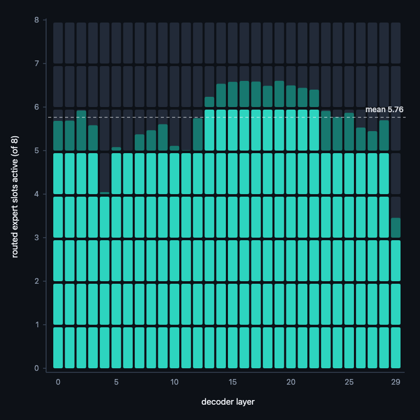
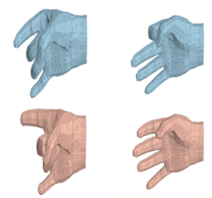
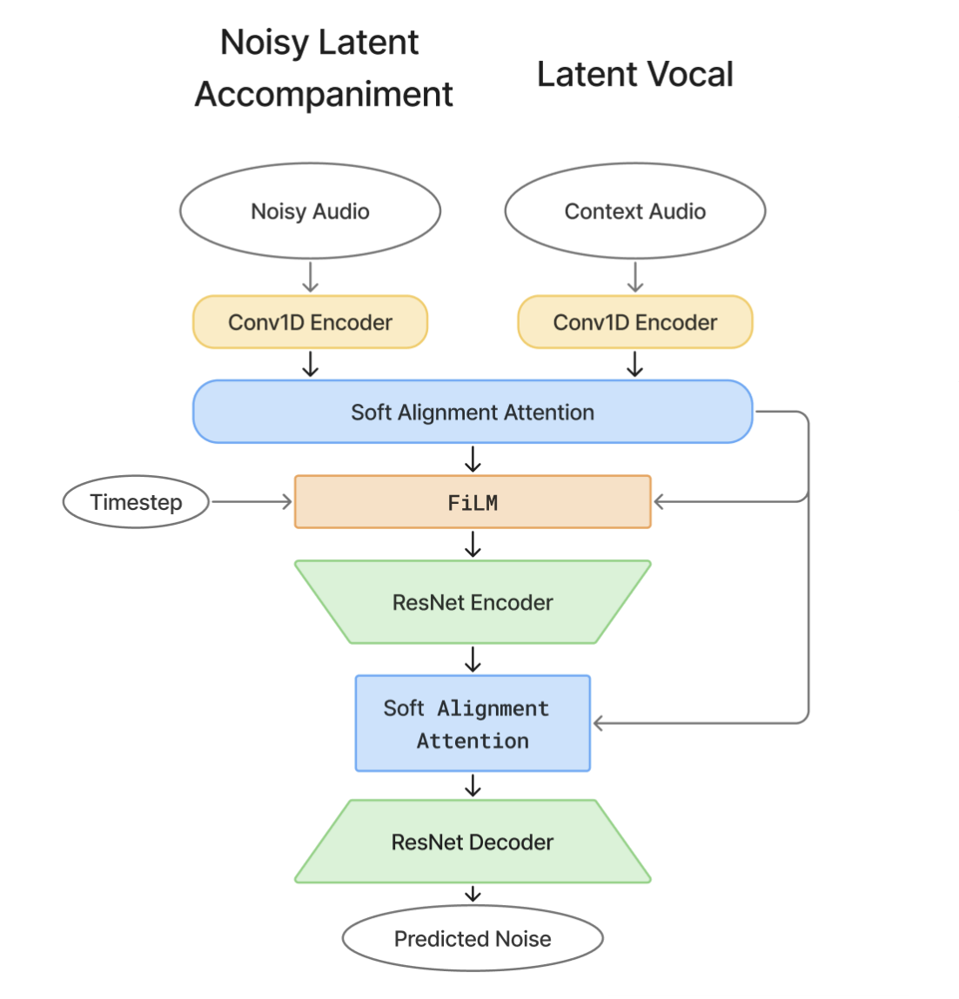
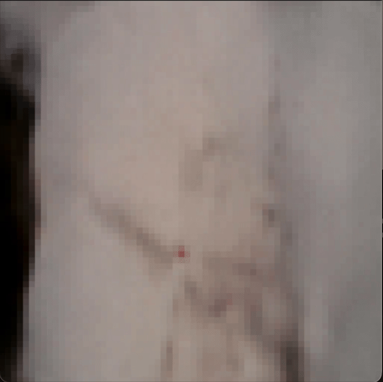
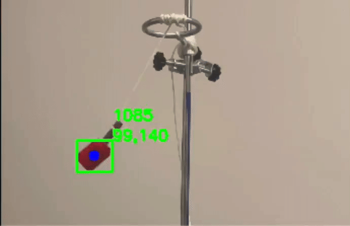

|

Each column is one of the 30 layers; teal is the expert compute that still runs. The base model fills every column to 8.
|
Per-Token Compute Budgeting in a 26B MoE Router
Hayson Cheung
Technical report, 2026
code
A light budget head per layer decides how many of the top-8 routed experts a token needs rather than which: distilled against the unmodified model, it cuts 8 active experts to 2.5 on WikiText and 5.8 in chat at router KL ≈ 0.05. Trained for Gemma 4 and DiffusionGemma. Achieved a near-lossless performance with 69% parameter reduction
|
|

Pose imagined from sEMG. Blue: ground truth, red: predicted.
|
REACT: A Conditioning Framework for User-Adaptive sEMG Hand Pose Estimation
Eric Xie,
Hei Shing (Hayson) Cheung
ICRA Workshop, 2026
arXiv
Surface EMG decoders degrade across users because electrode placement and muscle anatomy shift the input distribution. Conditioning a pose backbone on a learned per-user embedding absorbs that shift, beating the state of the art on all three EMG2POSE splits from under 45 seconds of calibration and with no retraining at deployment time.
|

Particle simulation run on the neural backbone.
|
PIVONet: A Physically-Informed Variational Neural ODE Model for Efficient Advection-Diffusion Fluid Simulation
Hei Shing (Hayson) Cheung,
Qicheng Long,
Zhiyue Lin
arXiv, 2026
arXiv
A neural surrogate for flows where advection and diffusion both matter. Splitting the dynamics into a deterministic neural ODE and a variational stochastic controller keeps the mean field physically consistent while still modelling the noise, which is worth an 80–96% accuracy gain over the purely deterministic baseline across flow regimes.
|
|

Soft alignment attention with FiLM timestep conditioning.
|
SAMUeL: Efficient Vocal-Conditioned Music Generation via Soft Alignment Attention and Latent Diffusion
Hei Shing (Hayson) Cheung,
Boya Zhang,
Jonathan H. Chan
IEEE/WIC WI-IAT, 2025
arXiv
Accompaniment has to track a vocal line locally while staying coherent globally. A soft alignment attention that reweights local against global temporal dependencies as a function of the diffusion timestep gets both from a 15M-parameter latent diffusion model: 220× fewer parameters and 52× faster inference at competitive quality.
|
|

Rollout from a learned world model.
|
World Models as a Proxy for Robotics
Hayson Cheung,
Eric Xie
Ongoing
Predictive representations for embodied agents: learning latent dynamics and planning in a compressed state space.
|
|
|
Amortized Manifold Planning by Energy Descent in Chess and Go
Hayson Cheung
In progress
Tree search depth at an exponential cost, the alternative here is to learn the value landscape as an energy over a continuous manifold of positions, so a plan comes from gradient descent on that energy instead of from expanding a frontier: branching becomes a fixed number of refinement steps, and those steps batch on a GPU where a search serializes.
|

Two NEAT agents fighting in a Smash Bros style game.
|
Neuroevolution as a Legible Model of Learned Behavior
Hayson Cheung,
Jet Chiang,
Eric Xie,
Paul Dong
code
NEAT grows topology and weights together from a minimal network, and training is done via evolution of genomes that defined the networks. I had it play smash bros and pongs.
|

Live generation of a LEGO banana.
|
LegoFIKS: Generative 3D LEGO Models and Build Instructions
Hayson Cheung,
Archie Shou,
Jessica Yunke Yi,
Allen Lian
devpost
Test-Image-to-3D generation lifts a photo into a 3D model, and structured decoding turns the resulting geometry into an ordered, step-by-step build sequence. First thing that got me into 3D generation.
|

The whole source sentence has to fit through one vector.
|
LSTM Encoder–Decoder Translator
Hayson Cheung
code /
colab
A sequence-to-sequence translator built around an LSTM bottleneck, first thing that got me into represenation learning and neuro networks.
|
|

Tracked bob and the arc it traces.
|
Pendulum Motion Analysis
Hayson Cheung
code
Real time tracking of pendulum from video, where the bob is found by cosine similarity in RGB and cross frame physical heuristics. Period and damping are then read off the trajectory. First-year physics project, and the first thing that got me into computer vision.
|